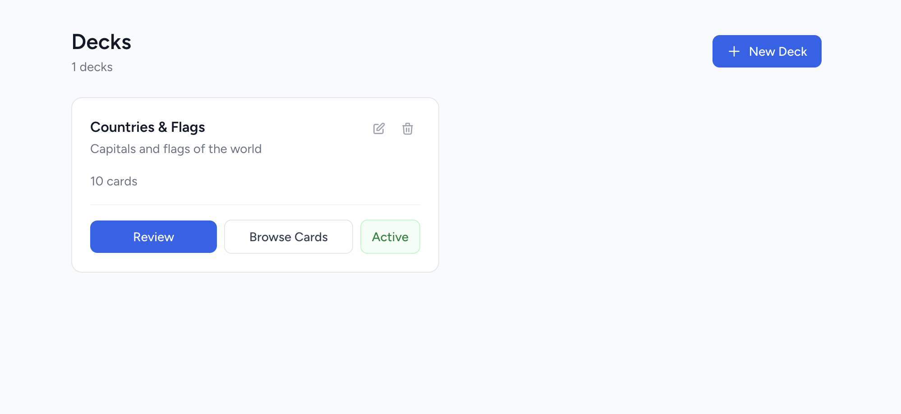
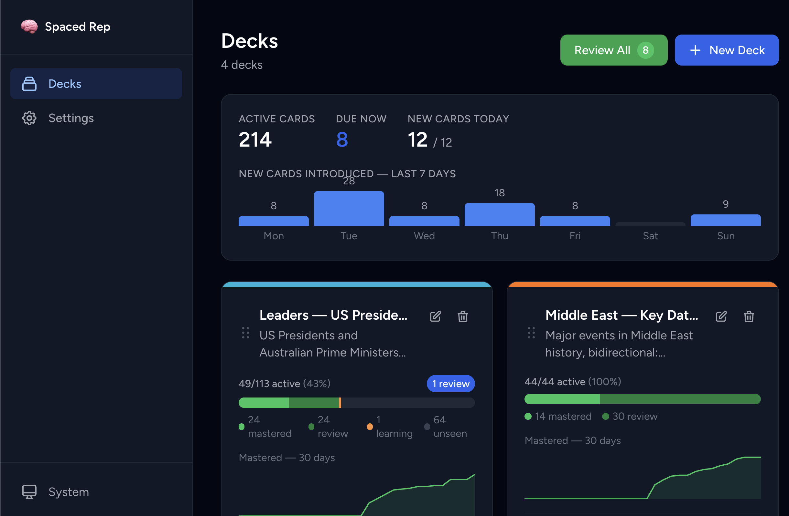
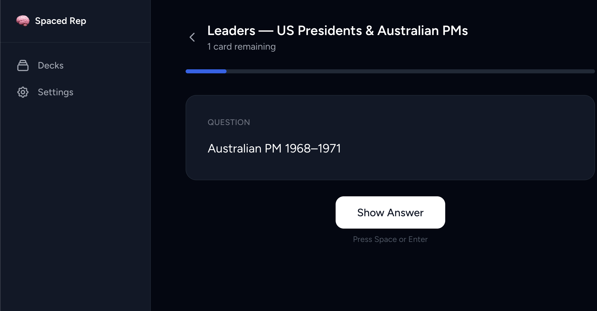

I've been trying to learn Vietnamese. Spaced repetition is the right tool for vocab: you rate each card on how well you knew it, and the scheduler decides when to show it next.
I tried the usual apps first. Anki works but the interface is rough and adding cards in bulk is fiddly. Most of the polished ones paywall basic features, lock your data in their cloud, or charge for push notifications. I just wanted a flashcard app that I owned, ran locally, and could pipe new words into from other tools. So I built one.



Scheduling
The scheduler is FSRS (Free Spaced Repetition Scheduler), via the scottlaurent/fsrs Composer package. It models each card with difficulty, stability, and retrievability, and fits those to your actual answers. Cards you find hard come back sooner, cards you know well get pushed out further. It's a step up from SM-2, the 80s formula Anki used for years.
Pushing cards in from elsewhere
The feature I use most is the REST API. I point Claude Code at a topic, it researches, generates the cards, and pushes them straight into the relevant deck. No manual entry, no card editor. I just show up and review.
POST /api/decks/{id}/cards
Authorization: Bearer <sanctum-token>
{"cards": [
{"front_content": "xin chào", "back_content": "hello"},
{"front_content": "cảm ơn", "back_content": "thank you"}
]}Notifications without an Apple Developer account
iOS push needs a $99/year Apple Developer account for a personal side project, which I wasn't going to pay. Instead, a cron job checks for due cards and pings me via a Telegram bot. It's a notification on my phone with a deep link, which is all I wanted.
Stack
Laravel 11 with SQLite, Inertia.js + Vue 3 + Tailwind on the frontend, Laravel Breeze for auth, Sanctum for API tokens. Runs in a Docker container on my homelab. 95 tests, 267 assertions.